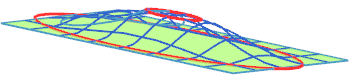

到曲线将把选中的面或片体加冠到选中的开放或封闭的高度曲线。可以使用一条或两条曲线。如果使用两条曲线，则曲线 2 必须包含曲线 1。区域边界必须封闭。

区域边界 — 选择一条或多条开放曲线作为要修改的区域边界，在这些曲线外，变形为零。
目标 — 您可以使用一条或者两条目标曲线，其中一条在另一条内部，两条目标曲线允许您在曲线内部和外部之间进行加冠。
目标曲线1：选择一条曲线或指定一个偏置值来定义加冠的高度，曲线可以是开放的，也可以是封闭的。其高度是从片体沿着变形方向来进行测量的。用这条曲线定义的内部区域偏置是恒定的。